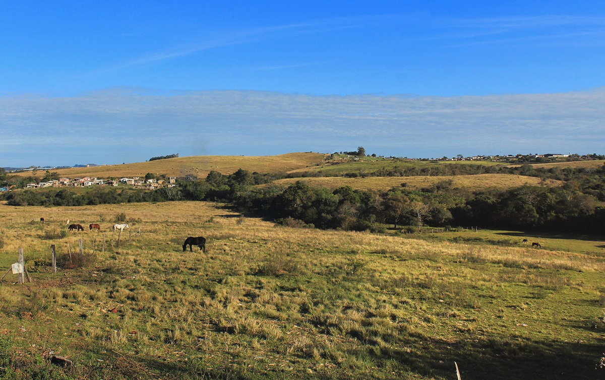
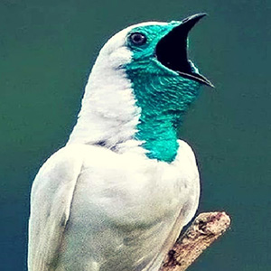
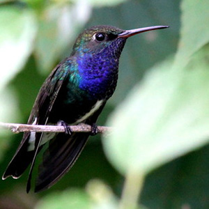
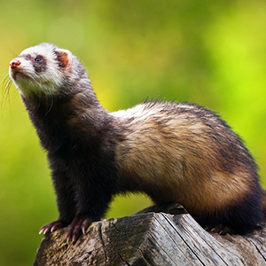

O Bioma Cerrado ocorre principalmente no Planalto Central Brasileiro e ocupa aproximadamente 24% do território brasileiro. O Cerrado é reconhecido como a Savana mais rica do mundo em biodiversidade. Até a década de 1950, os Cerrados mantiveram-se quase inalterados. A partir da década de 1960, com a transferência da Capital Federal, do Rio de Janeiro para Brasília, e a abertura de uma nova rede rodoviária, a cobertura vegetal natural deu lugar à pecuária e à agricultura intensiva.ada.
Pampa paisagem
Pampa Vista
|  | Araponga Pampa |  | Beija Flor peito azul pampa |  | Furão Pampa | Jacutinga Pampa |
Vamos conhecer mais sobre cada um dos nossos biomas?
basta clicar em um dos links abaixo